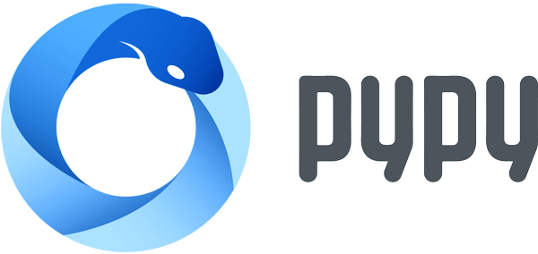

A fast and compliant alternative implementation of Python
What is PyPy? Get started Documentation
On average PyPy is 7.6 times faster than standard Python
Based on he geometric average of all benchmarks
"If you want your code to run faster, you should probably just use PyPy."Guido van Rossum (creator of Python)
Advantages and distinct features
- Speed: thanks to its Just-in-Time compiler, Python programs often run faster on PyPy. (What is a JIT compiler?)
- Memory usage: memory-hungry Python programs (several hundreds of MBs or more) might end up taking less space than they do in CPython.
- Compatibility: PyPy is highly compatible with existing python code. It supports cffi and can run popular python libraries like twisted and django.
- Stackless: PyPy comes by default with support for stackless mode, providing micro-threads for massive concurrency.
- As well as other features.